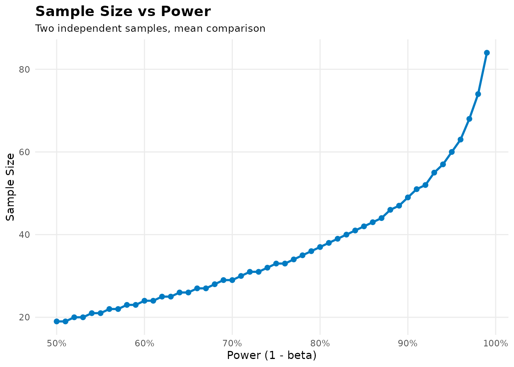
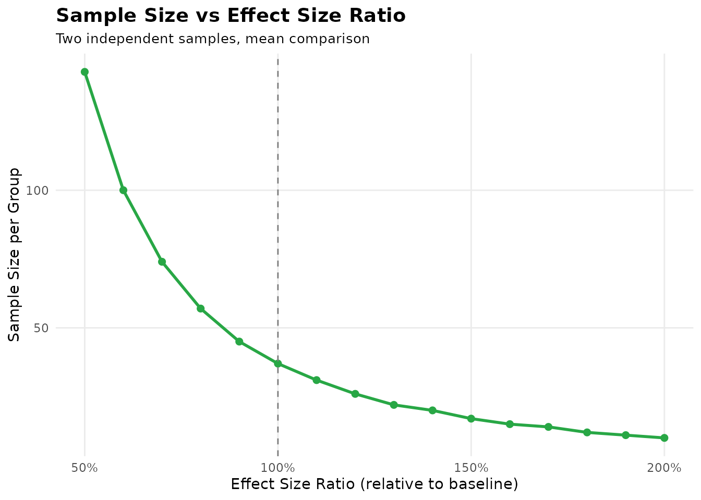

vignettes/sampleSizeCalc.Rmd
sampleSizeCalc.RmdThe sampleSizeCalc package provides a comprehensive
toolkit for sample size determination in clinical research. Version 3.0
introduces a three-axis API (design x
task x outcome) covering 39 design
combinations, while the legacy single-keyword API used in the examples
below remains fully (silently) compatible.
calculate("rct", "test", "mean", mean1 = 10, mean2 = 12, sd = 3)
calculate("cohort", "test", "proportion", p0 = 0.20, p1 = 0.30, dropout = 0.10)
calculate("diagAUC", "estimate", "auc",
auc = 0.80, d = 0.10,
ratio = 1, var_method = "binormal"
)Every result prints the role of each parameter under the chosen
design (e.g. p0 is the unexposed incidence in a cohort but
the control-group exposure rate in a case-control study), plus
methodological hints where relevant. See
docs/DESIGN_MATRIX.md for the full combination table and
docs/NUMERIC_ANCHORS.md for the published worked examples
used as automated test benchmarks.
The sampleSizeCalc package provides a comprehensive
toolkit for sample size determination in clinical research. It supports
17 different study designs across continuous outcomes,
categorical outcomes, survival analysis, diagnostic accuracy,
case-control studies, and AUC comparisons.
twoMeans)
Use case: Comparing means between two independent groups (e.g., treatment vs. control)
Example: A clinical trial comparing mean blood pressure reduction between two treatments
result <- sample_size_calculator(
design = "twoMeans",
mean1 = 10, # Control group mean (mmHg reduction)
mean2 = 12, # Treatment group mean (mmHg reduction)
sd = 3, # Common standard deviation
alpha = 0.05, # Significance level
power = 0.8 # Target power (80%)
)
print(result)Interpretation: - Need 37 subjects per group - Total sample size: 74 subjects - The effect size (Cohen’s d): 0.67
Formula: $$n = 2\\left(\\frac{(Z_{\\alpha/2} + Z_{\\beta}) \\cdot \\sigma}{\\mu_1 - \\mu_2}\\right)^2$$
Reference: Chow et al. (2017). Sample Size Calculations in Clinical Research (3rd ed.). CRC Press.
pairedMeans)
Use case: Comparing means from paired or matched observations (e.g., pre-post measurements, matched pairs)
Example: Measuring cognitive function before and after an intervention in the same subjects
result <- sample_size_calculator(
design = "pairedMeans",
meanDiff = 2.5, # Mean difference (post-pre)
sdDiff = 4.0, # SD of differences
alpha = 0.05,
power = 0.9
)
print(result)Interpretation: - Need 29 pairs (i.e., 58 measurements from 29 subjects) - Standardized effect size: 0.62
Reference: Rosner (2015). Fundamentals of Biostatistics (8th ed.). Cengage Learning.
twoProportions)
Use case: Comparing proportions between two independent groups
Example: Comparing response rates between two treatments
result <- sample_size_calculator(
design = "twoProportions",
p1 = 0.30, # Control response rate
p2 = 0.45, # Treatment response rate
alpha = 0.05,
power = 0.8
)
print(result)Interpretation: - Need 163 patients per group - Absolute risk reduction: 0.15 - Relative risk increase: 50%
Reference: Fleiss et al. (2003). Statistical Methods for Rates and Proportions (3rd ed.). Wiley.
survival)
Use case: Time-to-event analysis with log-rank test
Example: Oncology trial comparing overall survival between two treatments
result <- sample_size_calculator(
design = "survival",
hr = 0.70, # Hazard ratio (treatment vs. control)
pE = 0.50, # Proportion in experimental group (1:1 randomization)
alpha = 0.05,
power = 0.8
)
print(result)Important Notes: - This calculates the number of events needed, not the total sample size - Total sample size = events / event rate - For example, if event rate is 50%, total sample size needed: 494 subjects
Formula: $$E = \\frac{(Z_{\\alpha/2} + Z_{\\beta})^2}{p_E(1-p_E)[\\ln(HR)]^2}$$
Reference: Schoenfeld (1983). Sample-size formula for the proportional-hazards regression model. Biometrics, 39(2), 499-503.
nonInferiorityMeans)
Use case: Demonstrating that a new treatment is not worse than standard by more than a margin
Example: Non-inferiority trial for new antidepressant
result <- sample_size_calculator(
design = "nonInferiorityMeans",
mean1 = 8.0, # New treatment mean
mean2 = 8.5, # Standard treatment mean
sd = 2.0, # Common SD
margin = 1.0, # Non-inferiority margin (Δ)
alpha = 0.025, # One-sided test
power = 0.9
)
print(result)Key Points: - Uses one-sided α (typically 0.025) - Margin Δ defines clinically acceptable difference - New treatment must be within Δ of standard
Reference: Chow et al. (2017). Sample Size Calculations in Clinical Research (3rd ed.). CRC Press.
superiorityMeans)
Use case: Demonstrating that a new treatment is better than standard
Example: Superiority trial for new pain medication
result <- sample_size_calculator(
design = "superiorityMeans",
mean1 = 12.0, # New treatment mean (better)
mean2 = 10.0, # Standard treatment mean
sd = 2.5, # Common SD
margin = 0.5, # Minimal clinically important difference
alpha = 0.025, # One-sided test
power = 0.85
)
print(result)Key Points: - Uses one-sided α - Effect must exceed margin to be meaningful - Smaller margin requires larger sample size
equivalenceMeans)
Use case: Demonstrating two treatments are equivalent
Example: Bioequivalence study
result <- sample_size_calculator(
design = "equivalenceMeans",
mean1 = 100, # Test mean
mean2 = 102, # Reference mean
sd = 5, # Common SD
margin = 5, # Equivalence margin (±5 units)
alpha = 0.05,
power = 0.8
)
print(result)Key Points: - Uses TOST (Two One-Sided Tests) procedure - Requires Zβ/2 (larger sample size) - Margin must be larger than observed difference
diagnosticAccuracySingle)
Use case: Estimating sensitivity or specificity with a given precision
Example: Validating a new diagnostic test for disease X
result <- sample_size_calculator(
design = "diagnosticAccuracySingle",
prob = 0.85, # Expected sensitivity
d = 0.05, # Desired precision (±5%)
prevalence = 0.20, # Disease prevalence
alpha = 0.05
)
print(result)Interpretation: - Target state cases needed: 196 - Total subjects to screen: 980 - With 20% prevalence, need to screen 980 to get 196 cases
Formula: $$n_{cases} = \\frac{Z_{1-\\alpha/2}^2 \\cdot p(1-p)}{d^2}$$
Reference: Hajian-Tilaki (2014). Sample size determination in diagnostic test studies. Journal of Biomedical Informatics, 48, 193-204.
auc_single)
Use case: Estimating AUC with a confidence interval of given width
Example: Validating a new biomarker’s discriminative ability
result <- sample_size_calculator(
design = "auc_single",
auc = 0.80, # Expected AUC
d = 0.05, # Half-width of CI (±0.10 total)
prevalence = 0.30,
alpha = 0.05
)
print(result)Key Points: - Calculates cases with disease - AUC variance depends on AUC value and prevalence - Hanley-McNeil method is standard approach
Reference: Hanley & McNeil (1982). The meaning and use of AUC. Radiology, 143(1), 29-36.
aucComparison)
Use case: Comparing AUCs of two diagnostic tests applied to same subjects
Example: Comparing two imaging modalities
result <- sample_size_calculator(
design = "aucComparison",
auc1 = 0.85, # Test 1 AUC
auc2 = 0.80, # Test 2 AUC
r = 0.6, # Correlation between AUCs
prevalence = 0.25,
alpha = 0.05,
power = 0.8
)
print(result)Key Points: - Requires correlation coefficient (r) - Higher correlation → smaller sample size - Uses Hanley-McNeil method for paired design
caseControl)
Use case: Sample size for case-control studies with odds ratio
Example: Case-control study investigating smoking and lung cancer
result <- sample_size_calculator(
design = "caseControl",
p0 = 0.30, # Exposure rate in controls
OR = 2.5, # Target odds ratio
m = 1, # Controls per case (1:1 matching)
alpha = 0.05,
power = 0.8
)
print(result)Interpretation: - Cases needed: 80 - Controls needed: 80 - Total subjects: 160
Reference: Schlesselman (1982). Case-Control Studies: Design, Conduct, Analysis. Oxford University Press.
The plot() method can visualize power curves:
result <- sample_size_calculator(
"twoMeans",
mean1 = 10,
mean2 = 12,
sd = 3,
alpha = 0.05,
power = 0.8
)
# Plot sample size vs. power
plot(result, type = "power")
# Plot sample size vs. effect size ratio
plot(result, type = "sample_size")
summary() for Complete Information
result <- sample_size_calculator(
"survival",
hr = 0.70,
alpha = 0.05,
power = 0.8
)
summary(result)
#> $$E = \frac{(Z_{\alpha/2} + Z_{\beta})^2}{p_E(1-p_E)[\ln(HR)]^2}$$
#> Primary: Schoenfeld, D. A. (1983). Sample-size formula for the proportional-hazards regression model. Biometrics, 39(2), 499-503.
#>
#> Extensions:
#> - Hsieh, F. Y., & Lavori, P. W. (2000). Sample-size calculations for the Cox proportional hazards regression model with nonbinary covariates. Controlled Clinical Trials, 21(6), 552-560.
#> - Rubinstein, L. V., Gail, M. H., & Santner, T. J. (1981). Planning the duration of a comparative clinical trial with loss to follow-up and a period of continued observation. Journal of Chronic Diseases, 34(9-10), 469-479.The summary includes: - Study design description - All parameters used - Sample size results - Formula in LaTeX format - Complete literature citations
# DON'T: Use unrealistic effect sizes
sample_size_calculator("twoMeans", mean1 = 10, mean2 = 15, sd = 3)
# DO: Use effect sizes from literature or pilot studies
# From meta-analysis: standardized mean difference = 0.5
smd <- 0.5
sd <- 3
mean_diff <- smd * sd # 1.5
sample_size_calculator("twoMeans", mean1 = 10, mean2 = 10 + mean_diff, sd = sd)
# Calculate required sample size
result <- sample_size_calculator("twoMeans", mean1 = 10, mean2 = 12, sd = 3, power = 0.8)
n_per_group <- result$n_per_group
# Adjust for 20% dropout
dropout_rate <- 0.20
n_adjusted <- ceiling(n_per_group / (1 - dropout_rate))
# Conservative scenario (smaller effect)
result1 <- sample_size_calculator("twoMeans", mean1 = 10, mean2 = 11, sd = 3)
# Optimistic scenario (larger effect)
result2 <- sample_size_calculator("twoMeans", mean1 = 10, mean2 = 13, sd = 3)
# WRONG: Using independent formula for paired data
sample_size_calculator("twoMeans", mean1 = 10, mean2 = 12, sd = 3)
# CORRECT: Using paired design
sample_size_calculator("pairedMeans", meanDiff = 2, sdDiff = 4)
# Schoenfeld formula gives EVENTS, not sample size
result <- sample_size_calculator("survival", hr = 0.7, power = 0.8)
events_needed <- result$target_events_needed
# Convert to sample size based on event rate
event_rate <- 0.50 # 50% of subjects experience event
total_sample <- ceiling(events_needed / event_rate)
# WRONG: Using two-sided α for non-inferiority
sample_size_calculator("nonInferiorityMeans",
mean1 = 8, mean2 = 8.5,
sd = 2, margin = 1, alpha = 0.05
)
# CORRECT: Using one-sided α
sample_size_calculator("nonInferiorityMeans",
mean1 = 8, mean2 = 8.5,
sd = 2, margin = 1, alpha = 0.025
)| Design Type | Key Parameters | Primary Output | Main Reference |
|---|---|---|---|
twoMeans |
mean1, mean2, sd | n_per_group | Chow 2017 |
pairedMeans |
meanDiff, sdDiff | pairs_count | Rosner 2015 |
twoProportions |
p1, p2 | n_per_group | Fleiss 2003 |
survival |
hr, pE | target_events_needed | Schoenfeld 1983 |
nonInferiorityMeans |
mean1, mean2, sd, margin | n_per_group | Chow 2017 |
superiorityMeans |
mean1, mean2, sd, margin | n_per_group | Chow 2017 |
equivalenceMeans |
mean1, mean2, sd, margin | n_per_group | Chow 2017 |
diagnosticAccuracySingle |
prob, d, prevalence | target_state_cases | Hajian-Tilaki 2014 |
diagnosticSuperioritySingle |
prob, p0, prevalence | target_state_cases | Hajian-Tilaki 2014 |
diagnosticComparisonTwo |
p1, p2, paired, psi | target_state_cases | Hajian-Tilaki 2014 |
likelihoodRatioTest |
sens, spec, prevalence | recommended_cases | Hajian-Tilaki 2014 |
auc_single |
auc, d, prevalence | target_state_cases | Hanley & McNeil 1982 |
aucSuperiority |
auc, auc0, prevalence | target_state_cases | Hanley & McNeil 1982 |
aucComparison |
auc1, auc2, r, prevalence | target_state_cases | Hanley & McNeil 1983 |
caseControl |
p0, OR, m | cases_needed | Schlesselman 1982 |
equivalenceProportions |
p1, p2, margin | n_per_group | Chow 2017 |
superiorityProportions |
p1, p2, margin | n_per_group | Chow 2017 |
?sample_size_calculator
docs/formula_reference_guide.md
docs/literature_verification_report.md
If you use this package in your research, please cite:
@software{sampleSizeCalc,
title = {sampleSizeCalc: Sample Size Calculator for Clinical Research},
author = {AI Coding Assistant},
year = {2026},
version = {2.1.0},
url = {https://github.com/portos-wang/sampleSizeCalc}
}When using specific methods, also cite the original
methodology papers (see summary() output for
complete citations).
Last Updated: 2026-03-17
Version: 2.1.0